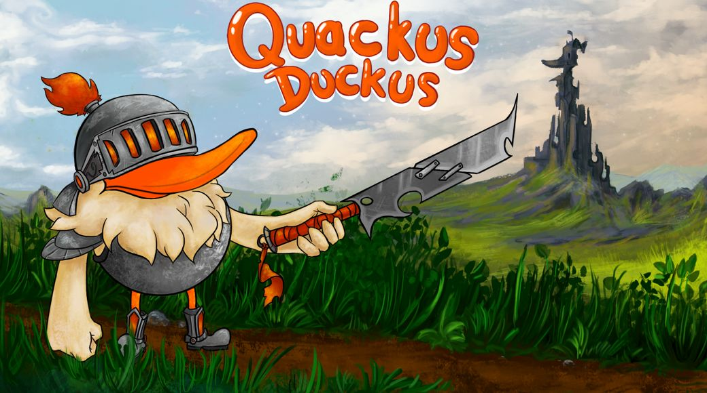
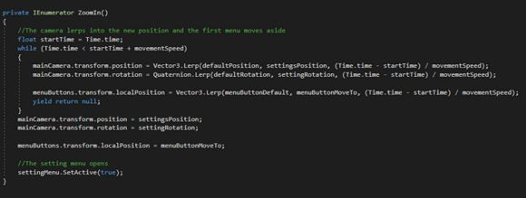

Quackus Duckus
Our hero Quackus Duckus just has arrived in his home town Ducking Village as he received a tinder message from Schleifischwan von Schwaningen. She told him: "ono Quackus bae them Geese from Goosehood be trashin' ma Louis Vuitton handbags" and just like every basic hero, Quackus could not ignore a damsel in distress. So thus, our hero makes himself on the way to the very not evil tower Gaensebluemchenturm.
Here we have very exiting code that showcases how I included a very special way to make the player walk without having any animations for the player sprite which is super special and exiting and I am indeed showing it off here to my left so you can see what I did and yea that's basically it very good very exiting and so on jada jada jada cool ok I'll leave.
 Here to my righr we have a picture or maybe hopefully a gif that showplays how I it looks ingame so yea that it pretty awesome and cool as well so uhm yea.
Here to my righr we have a picture or maybe hopefully a gif that showplays how I it looks ingame so yea that it pretty awesome and cool as well so uhm yea.
Here is the Link to the game and the repo so you can check the code out yourself. Also underneath is maybe hopefully a playthrough video.